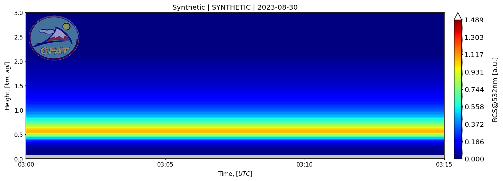
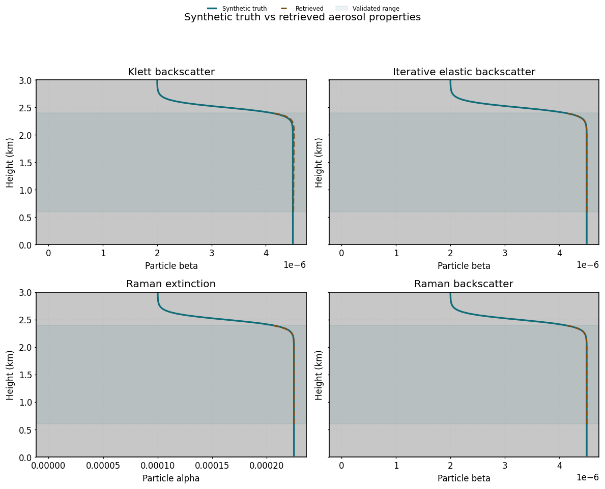

Data flow
- Discover a lidar measurement with
lidarpy.utils.file_manager. - Convert Licel binary files to NetCDF with
lidarpy.nc_convert.measurement. - Run basic preprocessing with
lidarpy.preprocessing.lidar_preprocessing. - Inspect products with
lidarpy.plot.quicklook. - Use synthetic signals to validate retrieval behavior independently from RAW fixtures.

Basic preprocessing currently covered by tests
- background correction.
- bin-zero handling.
- dark-current correction.
- dead-time correction.
- binning.
- Gaussian smoothing.
Retrieval validation
Retrieval tests compare Klett, Raman extinction and Raman backscatter against synthetic truth in a useful range that avoids near-field and boundary regions.

quasi_betais a single-iteration approximation, not an exact inversion.iterative_beta_forwardcan start above the first range bin wheninitial_particle_optical_depthis provided.- Reference intervals outside the range profile raise
ValueError.
Open workflow boundaries
Advanced overlap correction and gluing products are handled as separate migration steps so they can be reviewed without changing the basic chain.